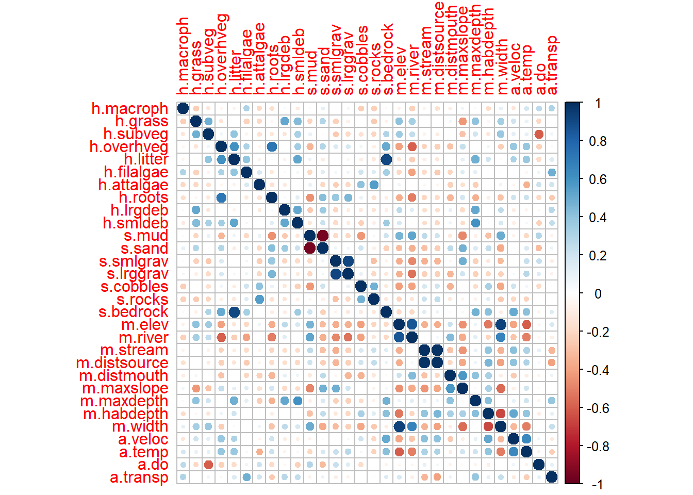
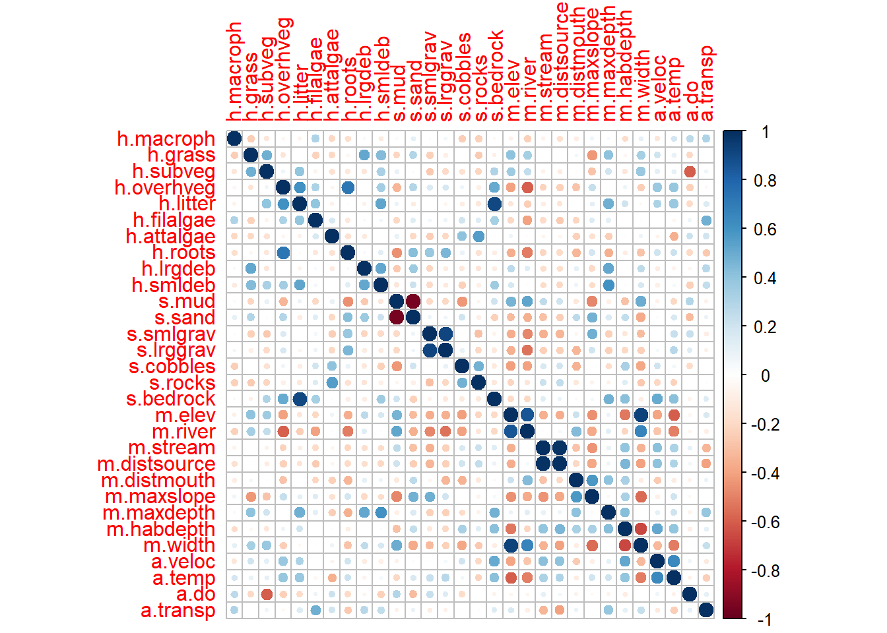

13 R Modulo 4.2 - Estrutura do habitat
13.1 Sobre os dados
Usaremos para esse tutorial dois conjuntos de dados. A Matriz ambiental (ppbio06p-amb.xlsx) de dados coletados no Programa de Pesquisa em Biodiversidade - PPBio (Veja Programa de Pesquisa em Biodiversidade – PPBio). Esses são dados de variáveis ambientais distribuidas em diversas unidades amostrais (UA’s ou sítios). Essa é a matriz bruta de dados, porque os valores ainda não foram transformados (SOKAL; ROHLF, 1995). Note que as variáveis foram medidas em diferentes unidades (cm, m, °C, mg/L, etc.), com uma alta amplitude de variação, sugerido uso de matriz transformada e/ou reescalada. Além disso usaremos a tabela de agrupamentos (ppbio06-grupos).
Revise as informações sobre as bases de dados no Capítulo 3. As dases de dados para esse Módulo podem ser baixadam na Seção 3.2.
13.2 Organização básica
dev.off() #apaga os graficos, se houver algum
rm(list=ls(all=TRUE)) #limpa a memória
cat("\014") #limpa o console 13.2.1 Instalando os pacotes necessários para esse módulo.
Se você ja fez o módulo anterior, não vai precisar instalar nenhum pacote novo. Os pacotes necessários serão carregados ao longo desse módulo.
install.packages("psych")
install.packages("corrplot")Agora vamos definir o diretório de trabalho. Esse código é usado para obter e definir o diretório de trabalho atual no R. O comando getwd() retorna o caminho do diretório onde o R está lendo e salvando arquivos. O comando setwd() muda esse diretório de trabalho para o caminho especificado entre aspas. No seu caso, você deve ajustar o caminho para o seu próprio diretório de trabalho. Lembre de usar a barra “/” entre os diretórios. E não a contra-barra “\”.
getwd()
setwd("C:/Seu/Diretório/De/Trabalho")13.3 Importando a planilha
Note que o símbolo # em programação R significa que o texto que vem depois dele é um comentário e não será executado pelo programa. Isso é útil para explicar o código ou deixar anotações.
- Ajuste a primeira linha do código abaixo para refletir “C:/Seu/Diretório/De/Trabalho/Planilha.xlsx”.
- Ajuste o parâmetro sheet = "Sheet1" para refletir a aba correta do arquivo .xlsx a ser importado. Vamos trabalhar com os dados do ano 1.
#dir <- getwd() #criamos um vetor com o diretório de trbalho
#shell.exec(dir) #abre o diretorio de trabalho no Windows Explorer
library(openxlsx)## Warning: package 'openxlsx' was built under R version 4.3.2ppbio <- read.xlsx("D:/Elvio/OneDrive/Disciplinas/_EcoNumerica/5.Matrizes/ppbio06p-amb.xlsx",
rowNames = T, colNames = T,
sheet = "ano1")
str(ppbio)
#View(ppbio)
ppbio[1:5,1:5] #[1:5,1:5] mostra apenas as linhas e colunas de 1 a 5.## 'data.frame': 23 obs. of 30 variables:
## $ h.macroph : num 8.33 0 5.83 0 0 ...
## $ h.grass : num 20 23.3 0 20 0 ...
## $ h.subveg : num 10 3 16.7 0 0 ...
## $ h.overhveg : num 0 26.7 33.3 0 33.3 ...
## $ h.litter : num 0.667 2.333 23.667 0 1 ...
## $ h.filalgae : num 0 3.33 25 0 0 ...
## $ h.attalgae : num 12 0.667 3.333 1 0 ...
## $ h.roots : num 0 3.33 0 0 5 ...
## $ h.lrgdeb : num 1.67 1.67 0 0 3.33 ...
## $ h.smldeb : num 1.67 2 10 0 7 ...
## $ s.mud : num 65 16.667 81.667 40 0.667 ...
## $ s.sand : num 30 70 8.33 40 87.67 ...
## $ s.smlgrav : num 0 5 1.67 0 3.33 ...
## $ s.lrggrav : num 0 5 0 0 3.33 ...
## $ s.cobbles : num 1.67 3.33 0 20 5 ...
## $ s.rocks : num 0 0 0 0 0 ...
## $ s.bedrock : num 3.33 0 8.33 0 0 ...
## $ m.elev : num 226 169 270 226 169 270 226 169 270 226 ...
## $ m.river : num 163 83 110 163 83 ...
## $ m.stream : num 163.2 13.6 37.1 163.2 13.6 ...
## $ m.distsource: num 84.45 6.15 8.85 84.45 6.15 ...
## $ m.distmouth : num 217 186 255 217 186 ...
## $ m.maxslope : num 30 60 60 30 60 60 30 60 60 30 ...
## $ m.maxdepth : num 106 60 154 105 68 118 110 79 109 74 ...
## $ m.habdepth : num 81.3 22.7 54.7 67 32.7 ...
## $ m.width : num 19.6 17.2 102 16.1 18.5 ...
## $ a.veloc : num 0.167 0.159 0.1 0.125 0 ...
## $ a.temp : num 32.9 35.2 34 32 29 ...
## $ a.do : num 6.51 6.86 4.82 5.38 3.02 ...
## $ a.transp : num 46 26 61 44 33 ...
## h.macroph h.grass h.subveg h.overhveg h.litter
## S-R-CT1 8.333333 20.00000 10.00000 0.00000 0.6666667
## S-R-CP1 0.000000 23.33333 3.00000 26.66667 2.3333333
## S-A-TA1 5.833333 0.00000 16.66667 33.33333 23.6666660
## S-R-CT2 0.000000 20.00000 0.00000 0.00000 0.0000000
## S-R-CP2 0.000000 0.00000 0.00000 33.33333 1.0000000Exibindo os dados importados (esses comando são “case-sensitive” ignore.case(object)).
#View(ppbio)
print(ppbio[1:8,1:8])
ppbio[1:10,1:10]
str(ppbio)
mode(ppbio)
class(ppbio)13.4 Reset point
m_amb <- ppbio
#pat <- "^S"
#m_amb <- m_amb[!grepl(pat, rownames(m_amb)), ] #exclui quem começa com patAqui cria-se um novo objeto do R (m_trab, ou a matriz de trabalho, para esse momento) que substitui a matriz de dados original, por uma nova matriz que pode ser a matriz relativizada, transformada, transposta, etc. Dessa forma, mantemos a matriz de dados original caso precisemos dela novamente (Veja a Tabela ??).
Revise Seção 3.2.2 e a Tabela de Abreviações (@ref(tab:200m_2)) na mesma Seção que resumem os tipos de matrizes e suas abreviações, para os nossos códigos.
13.5 Correlograma e remoção de variáveis redundantes ou desnecessárias
library(psych)
colnames(m_amb)
pairs.panels(m_amb[,1:10],
method = "pearson", # correlation method
scale = FALSE, lm = FALSE,
hist.col = "#00AFBB", pch = 19,
density = TRUE, # show density plots
ellipses = TRUE, # show correlation ellipses
alpha = 0.5)
cor <- cor(m_amb)
cor
library(corrplot)## corrplot 0.92 loadedcorrplot(cor, method = "circle")
#win.print()
#corrplot(cor, method = "circle")
#dev.off()## [1] "h.macroph" "h.grass" "h.subveg" "h.overhveg" "h.litter"
## [6] "h.filalgae" "h.attalgae" "h.roots" "h.lrgdeb" "h.smldeb"
## [11] "s.mud" "s.sand" "s.smlgrav" "s.lrggrav" "s.cobbles"
## [16] "s.rocks" "s.bedrock" "m.elev" "m.river" "m.stream"
## [21] "m.distsource" "m.distmouth" "m.maxslope" "m.maxdepth" "m.habdepth"
## [26] "m.width" "a.veloc" "a.temp" "a.do" "a.transp"
## h.macroph h.grass h.subveg h.overhveg h.litter
## h.macroph 1.00000000 -0.246531504 -0.13690655 -0.0460990189 -0.062637491
## h.grass -0.24653150 1.000000000 0.48407509 -0.1460764735 -0.001721976
## h.subveg -0.13690655 0.484075094 1.00000000 0.0635287907 0.399197150
## h.overhveg -0.04609902 -0.146076474 0.06352879 1.0000000000 0.603643875
## h.litter -0.06263749 -0.001721976 0.39919715 0.6036438749 1.000000000
## h.filalgae 0.30739321 -0.225737505 -0.06840003 0.3151725645 0.391954687
## h.attalgae -0.20061743 -0.203856535 -0.15804953 -0.0588612264 -0.074417928
## h.roots -0.17114523 -0.042846121 -0.12422422 0.7224571129 -0.020670464
## h.lrgdeb 0.03975689 0.517038783 -0.13497524 -0.0002521598 -0.076622164
## h.smldeb -0.11282416 0.430029457 0.32450367 0.3420275576 0.524639005
## s.mud -0.02825772 -0.213876066 0.09356431 -0.3318047182 0.081241055
## s.sand 0.10165279 0.290788117 -0.02468805 0.2908755666 -0.108025446
## s.smlgrav 0.02303766 -0.230252599 -0.26591389 0.1532179364 0.008573628
## s.lrggrav 0.05597825 -0.088160779 -0.19524294 0.1761326511 -0.054082053
## s.cobbles -0.24512665 -0.007205913 -0.15483540 0.0694742877 -0.093430622
## s.rocks -0.23075335 -0.259155527 -0.21954489 -0.0873692368 -0.121239165
## s.bedrock -0.03652910 -0.083573123 0.30828355 0.5073656218 0.900953133
## m.elev -0.08310889 0.403591279 0.35058982 -0.4003114855 -0.131742426
## m.river -0.23257092 0.335464812 0.24926832 -0.5955683647 -0.242615414
## m.stream -0.06608660 -0.004596811 -0.07497728 -0.2227767752 -0.096058730
## m.distsource -0.16898179 0.005784151 -0.10079544 -0.2397842969 -0.143925113
## m.distmouth -0.09461959 0.058821726 -0.01701650 -0.2886438017 0.009362746
## m.maxslope 0.06917689 -0.432093408 -0.28679549 0.2396730909 0.112055941
## m.maxdepth 0.03186630 0.402241943 0.19851159 -0.0016801722 0.489997569
## m.habdepth -0.18039247 -0.045055633 -0.13643528 0.0703614430 0.206858486
## m.width 0.10609087 0.339661628 0.37489017 -0.2460756693 -0.036647042
## a.veloc -0.13503225 0.204580859 0.11506415 0.3775858154 0.314867909
## a.temp 0.18273224 0.093689794 0.10708693 0.3872777253 0.376177481
## a.do 0.26259801 -0.202794752 -0.60025144 -0.2351348072 -0.186841357
## a.transp 0.30879962 -0.007818165 0.06381010 -0.0405424177 0.149062804
## h.filalgae h.attalgae h.roots h.lrgdeb h.smldeb
## h.macroph 0.307393212 -0.2006174303 -0.17114523 0.0397568923 -0.1128241586
## h.grass -0.225737505 -0.2038565351 -0.04284612 0.5170387832 0.4300294573
## h.subveg -0.068400029 -0.1580495292 -0.12422422 -0.1349752429 0.3245036701
## h.overhveg 0.315172564 -0.0588612264 0.72245711 -0.0002521598 0.3420275576
## h.litter 0.391954687 -0.0744179283 -0.02067046 -0.0766221642 0.5246390055
## h.filalgae 1.000000000 0.1650218328 -0.12170792 0.0330671467 0.0566631854
## h.attalgae 0.165021833 1.0000000000 -0.15141029 -0.1110887477 -0.0007226332
## h.roots -0.121707915 -0.1514102880 1.00000000 0.0359061688 0.1278778876
## h.lrgdeb 0.033067147 -0.1110887477 0.03590617 1.0000000000 0.5126858957
## h.smldeb 0.056663185 -0.0007226332 0.12787789 0.5126858957 1.0000000000
## s.mud -0.203493831 0.0966629147 -0.45742597 -0.2661041300 -0.1358265852
## s.sand 0.131463557 -0.2065073854 0.42226823 0.3631216979 0.2116433147
## s.smlgrav 0.056355761 -0.2466165417 0.37504581 -0.2178131916 -0.1938969370
## s.lrggrav 0.071026543 -0.2019284184 0.45157180 -0.1064395977 -0.1131217094
## s.cobbles 0.193135679 0.4075488652 0.08813464 -0.1218105205 -0.2307397229
## s.rocks 0.144067566 0.5595435077 -0.15324139 -0.1450923302 -0.0896567456
## s.bedrock 0.338537041 -0.0146391847 -0.09492929 -0.0956520825 0.3503440506
## m.elev -0.203448440 0.0716487680 -0.36640440 0.2656332571 0.1727891903
## m.river -0.405669260 -0.0195694902 -0.51853032 0.1309548871 -0.0189887633
## m.stream -0.185417996 -0.0598126521 -0.21720079 -0.1720191090 -0.1810175388
## m.distsource -0.254533090 -0.0572352576 -0.18429493 -0.1776252995 -0.2083808690
## m.distmouth -0.217780469 -0.2330343386 -0.33511609 0.1038897654 0.0767920775
## m.maxslope 0.145284072 -0.1601113205 0.18673984 -0.1907894213 -0.1808970343
## m.maxdepth 0.114574709 -0.2474674119 -0.35179352 0.5122182964 0.6060301921
## m.habdepth 0.002882856 0.0164745166 -0.09468290 0.0036984721 0.0212264396
## m.width -0.011447418 0.0797573366 -0.28844323 0.2562191774 0.1713597968
## a.veloc -0.002302649 -0.0605797247 0.20772262 -0.1007706522 -0.0883913083
## a.temp -0.047385170 -0.3528557182 0.21266182 -0.0633115802 0.0495255921
## a.do 0.075932799 0.2107159895 -0.19965987 -0.0527554510 -0.2305667359
## a.transp 0.486443594 0.1991293428 -0.26299621 0.2727840805 0.2437019444
## s.mud s.sand s.smlgrav s.lrggrav s.cobbles
## h.macroph -0.02825772 0.10165279 0.023037659 0.05597825 -0.245126650
## h.grass -0.21387607 0.29078812 -0.230252599 -0.08816078 -0.007205913
## h.subveg 0.09356431 -0.02468805 -0.265913890 -0.19524294 -0.154835404
## h.overhveg -0.33180472 0.29087557 0.153217936 0.17613265 0.069474288
## h.litter 0.08124106 -0.10802545 0.008573628 -0.05408205 -0.093430622
## h.filalgae -0.20349383 0.13146356 0.056355761 0.07102654 0.193135679
## h.attalgae 0.09666291 -0.20650739 -0.246616542 -0.20192842 0.407548865
## h.roots -0.45742597 0.42226823 0.375045814 0.45157180 0.088134635
## h.lrgdeb -0.26610413 0.36312170 -0.217813192 -0.10643960 -0.121810520
## h.smldeb -0.13582659 0.21164331 -0.193896937 -0.11312171 -0.230739723
## s.mud 1.00000000 -0.95732831 -0.196136235 -0.20727196 -0.436951580
## s.sand -0.95732831 1.00000000 0.077601964 0.06113988 0.208220232
## s.smlgrav -0.19613624 0.07760196 1.000000000 0.91794933 -0.018580075
## s.lrggrav -0.20727196 0.06113988 0.917949325 1.00000000 0.092736437
## s.cobbles -0.43695158 0.20822023 -0.018580075 0.09273644 1.000000000
## s.rocks -0.05450604 -0.08712170 -0.290187186 -0.20917141 0.471919983
## s.bedrock 0.20788751 -0.23158686 -0.068825165 -0.12957657 -0.117937719
## m.elev 0.46647761 -0.31506556 -0.363536747 -0.35844427 -0.418891510
## m.river 0.52267706 -0.35870643 -0.487625688 -0.54998626 -0.404162728
## m.stream 0.25913400 -0.29280195 -0.351718673 -0.23344861 0.162336709
## m.distsource 0.20798419 -0.24660914 -0.335764568 -0.23558448 0.197820570
## m.distmouth -0.12783195 0.26298990 -0.055199753 -0.33221276 -0.343006017
## m.maxslope -0.48822579 0.47051421 0.480231912 0.19989479 0.003285850
## m.maxdepth -0.08984828 0.15690152 -0.233610098 -0.23813743 -0.181918712
## m.habdepth -0.29918013 0.24152725 -0.124634583 -0.20123580 0.329637349
## m.width 0.49913277 -0.37568825 -0.310246711 -0.23740245 -0.381602616
## a.veloc -0.07881376 0.02561095 -0.011480476 0.04477510 0.201826380
## a.temp -0.20642510 0.16196759 0.223976700 0.27319038 0.054683155
## a.do 0.29936318 -0.31184728 0.228246923 0.14674375 -0.188261015
## a.transp -0.07274786 0.08367750 -0.090575822 -0.07405382 0.010898759
## s.rocks s.bedrock m.elev m.river m.stream
## h.macroph -0.230753352 -0.03652910 -0.08310889 -0.23257092 -0.066086599
## h.grass -0.259155527 -0.08357312 0.40359128 0.33546481 -0.004596811
## h.subveg -0.219544891 0.30828355 0.35058982 0.24926832 -0.074977285
## h.overhveg -0.087369237 0.50736562 -0.40031149 -0.59556836 -0.222776775
## h.litter -0.121239165 0.90095313 -0.13174243 -0.24261541 -0.096058730
## h.filalgae 0.144067566 0.33853704 -0.20344844 -0.40566926 -0.185417996
## h.attalgae 0.559543508 -0.01463918 0.07164877 -0.01956949 -0.059812652
## h.roots -0.153241391 -0.09492929 -0.36640440 -0.51853032 -0.217200787
## h.lrgdeb -0.145092330 -0.09565208 0.26563326 0.13095489 -0.172019109
## h.smldeb -0.089656746 0.35034405 0.17278919 -0.01898876 -0.181017539
## s.mud -0.054506037 0.20788751 0.46647761 0.52267706 0.259134004
## s.sand -0.087121705 -0.23158686 -0.31506556 -0.35870643 -0.292801947
## s.smlgrav -0.290187186 -0.06882517 -0.36353675 -0.48762569 -0.351718673
## s.lrggrav -0.209171407 -0.12957657 -0.35844427 -0.54998626 -0.233448612
## s.cobbles 0.471919983 -0.11793772 -0.41889151 -0.40416273 0.162336709
## s.rocks 1.000000000 -0.12799218 -0.21907348 -0.13545807 0.215737335
## s.bedrock -0.127992185 1.00000000 -0.19742578 -0.20071090 0.131806173
## m.elev -0.219073482 -0.19742578 1.00000000 0.85251041 -0.351025053
## m.river -0.135458068 -0.20071090 0.85251041 1.00000000 0.017040248
## m.stream 0.215737335 0.13180617 -0.35102505 0.01704025 1.000000000
## m.distsource 0.248398309 0.08398842 -0.36628911 0.04500187 0.987553629
## m.distmouth -0.128592531 -0.03694612 0.21088433 0.43005863 -0.285305822
## m.maxslope -0.063334534 0.04208746 -0.45271956 -0.37494422 -0.445502469
## m.maxdepth -0.078095404 0.47564528 0.08022982 0.12595144 0.094085376
## m.habdepth 0.133210844 0.41315901 -0.52848500 -0.21000817 0.395997655
## m.width -0.267413674 -0.09980488 0.92959448 0.66160089 -0.341120113
## a.veloc -0.203924152 0.50163597 -0.39264584 -0.27533927 0.410516289
## a.temp -0.221454717 0.41538130 -0.60522317 -0.50743529 0.318565681
## a.do 0.004835464 -0.06655234 -0.04245875 -0.05281226 0.104875559
## a.transp -0.016360295 0.14038232 0.16444871 -0.08762683 -0.339047044
## m.distsource m.distmouth m.maxslope m.maxdepth m.habdepth
## h.macroph -0.168981791 -0.094619591 0.069176887 0.031866297 -0.180392470
## h.grass 0.005784151 0.058821726 -0.432093408 0.402241943 -0.045055633
## h.subveg -0.100795436 -0.017016500 -0.286795491 0.198511591 -0.136435275
## h.overhveg -0.239784297 -0.288643802 0.239673091 -0.001680172 0.070361443
## h.litter -0.143925113 0.009362746 0.112055941 0.489997569 0.206858486
## h.filalgae -0.254533090 -0.217780469 0.145284072 0.114574709 0.002882856
## h.attalgae -0.057235258 -0.233034339 -0.160111320 -0.247467412 0.016474517
## h.roots -0.184294932 -0.335116093 0.186739840 -0.351793522 -0.094682904
## h.lrgdeb -0.177625299 0.103889765 -0.190789421 0.512218296 0.003698472
## h.smldeb -0.208380869 0.076792078 -0.180897034 0.606030192 0.021226440
## s.mud 0.207984189 -0.127831955 -0.488225793 -0.089848279 -0.299180125
## s.sand -0.246609145 0.262989896 0.470514210 0.156901516 0.241527247
## s.smlgrav -0.335764568 -0.055199753 0.480231912 -0.233610098 -0.124634583
## s.lrggrav -0.235584477 -0.332212758 0.199894791 -0.238137430 -0.201235803
## s.cobbles 0.197820570 -0.343006017 0.003285850 -0.181918712 0.329637349
## s.rocks 0.248398309 -0.128592531 -0.063334534 -0.078095404 0.133210844
## s.bedrock 0.083988424 -0.036946118 0.042087459 0.475645280 0.413159010
## m.elev -0.366289105 0.210884333 -0.452719558 0.080229817 -0.528485000
## m.river 0.045001873 0.430058635 -0.374944223 0.125951443 -0.210008174
## m.stream 0.987553629 -0.285305822 -0.445502469 0.094085376 0.395997655
## m.distsource 1.000000000 -0.208886217 -0.380287859 0.070018120 0.454126171
## m.distmouth -0.208886217 1.000000000 0.575655522 0.409794260 0.329568908
## m.maxslope -0.380287859 0.575655522 1.000000000 -0.033910389 0.326367540
## m.maxdepth 0.070018120 0.409794260 -0.033910389 1.000000000 0.425648040
## m.habdepth 0.454126171 0.329568908 0.326367540 0.425648040 1.000000000
## m.width -0.403406954 -0.091476026 -0.569731109 0.010919605 -0.663930169
## a.veloc 0.409162331 -0.251728578 -0.087772483 0.109911454 0.516555276
## a.temp 0.303332037 -0.107191864 0.190578794 0.204458211 0.390454228
## a.do 0.054863239 -0.066103944 -0.039194058 -0.068299977 -0.098869325
## a.transp -0.402578165 0.084213818 0.008475289 0.389325169 0.109987158
## m.width a.veloc a.temp a.do a.transp
## h.macroph 0.106090873 -0.135032245 0.18273224 0.262598008 0.308799625
## h.grass 0.339661628 0.204580859 0.09368979 -0.202794752 -0.007818165
## h.subveg 0.374890169 0.115064150 0.10708693 -0.600251445 0.063810096
## h.overhveg -0.246075669 0.377585815 0.38727773 -0.235134807 -0.040542418
## h.litter -0.036647042 0.314867909 0.37617748 -0.186841357 0.149062804
## h.filalgae -0.011447418 -0.002302649 -0.04738517 0.075932799 0.486443594
## h.attalgae 0.079757337 -0.060579725 -0.35285572 0.210715990 0.199129343
## h.roots -0.288443233 0.207722616 0.21266182 -0.199659873 -0.262996213
## h.lrgdeb 0.256219177 -0.100770652 -0.06331158 -0.052755451 0.272784080
## h.smldeb 0.171359797 -0.088391308 0.04952559 -0.230566736 0.243701944
## s.mud 0.499132769 -0.078813761 -0.20642510 0.299363179 -0.072747855
## s.sand -0.375688250 0.025610951 0.16196759 -0.311847278 0.083677500
## s.smlgrav -0.310246711 -0.011480476 0.22397670 0.228246923 -0.090575822
## s.lrggrav -0.237402453 0.044775100 0.27319038 0.146743753 -0.074053824
## s.cobbles -0.381602616 0.201826380 0.05468315 -0.188261015 0.010898759
## s.rocks -0.267413674 -0.203924152 -0.22145472 0.004835464 -0.016360295
## s.bedrock -0.099804876 0.501635966 0.41538130 -0.066552340 0.140382315
## m.elev 0.929594477 -0.392645839 -0.60522317 -0.042458750 0.164448713
## m.river 0.661600887 -0.275339274 -0.50743529 -0.052812259 -0.087626835
## m.stream -0.341120113 0.410516289 0.31856568 0.104875559 -0.339047044
## m.distsource -0.403406954 0.409162331 0.30333204 0.054863239 -0.402578165
## m.distmouth -0.091476026 -0.251728578 -0.10719186 -0.066103944 0.084213818
## m.maxslope -0.569731109 -0.087772483 0.19057879 -0.039194058 0.008475289
## m.maxdepth 0.010919605 0.109911454 0.20445821 -0.068299977 0.389325169
## m.habdepth -0.663930169 0.516555276 0.39045423 -0.098869325 0.109987158
## m.width 1.000000000 -0.326799203 -0.51641177 -0.002086238 0.232399977
## a.veloc -0.326799203 1.000000000 0.64196801 0.063666386 -0.111321669
## a.temp -0.516411771 0.641968008 1.00000000 -0.072530252 -0.241797672
## a.do -0.002086238 0.063666386 -0.07253025 1.000000000 0.109896052
## a.transp 0.232399977 -0.111321669 -0.24179767 0.109896052 1.000000000 

13.6 Deletando variáveis colineares
Primeiro vamos listar as variáveis com correlação maior que 70% ou r > 0.7.
# Get upper triangle (to avoid duplicate pairs)
r <- 0.7
cor_pairs <- which(abs(cor) > r & abs(cor) < 1, arr.ind = TRUE)
# Extract unique variable pairs
results <- data.frame(
var1 = rownames(cor)[cor_pairs[, 1]],
var2 = colnames(cor)[cor_pairs[, 2]],
correlation = cor[cor_pairs]
)
# Remove duplicates (e.g. A-B and B-A)
results <- results[results$var1 < results$var2, ]
# Sort by absolute correlation (descending)
results <- results[order(-abs(results$correlation)), ]
results## var1 var2 correlation
## 12 m.distsource m.stream 0.9875536
## 5 s.mud s.sand -0.9573283
## 14 m.elev m.width 0.9295945
## 6 s.lrggrav s.smlgrav 0.9179493
## 8 h.litter s.bedrock 0.9009531
## 11 m.elev m.river 0.8525104
## 3 h.overhveg h.roots 0.7224571Agora que temos as variáveis correlacionadas, prosseguimos para deleta-las.
colnames(m_amb)
del_cols <- c("m.distsource", "m.elev") #exemplo, "g.river_length","g.altitude"
m_amb_part <- m_amb[, !(colnames(m_amb) %in% del_cols)]## [1] "h.macroph" "h.grass" "h.subveg" "h.overhveg" "h.litter"
## [6] "h.filalgae" "h.attalgae" "h.roots" "h.lrgdeb" "h.smldeb"
## [11] "s.mud" "s.sand" "s.smlgrav" "s.lrggrav" "s.cobbles"
## [16] "s.rocks" "s.bedrock" "m.elev" "m.river" "m.stream"
## [21] "m.distsource" "m.distmouth" "m.maxslope" "m.maxdepth" "m.habdepth"
## [26] "m.width" "a.veloc" "a.temp" "a.do" "a.transp"13.7 Somando variáveis redundantes
Algumas dessa variáveis são redundantes, vamos soma-las.
m_amb_part$s.gravel <- m_amb_part$s.smlgrav + m_amb_part$s.lrggrav + m_amb_part$s.cobbles
m_amb_part <- m_amb_part[, !(colnames(m_amb_part)
%in% c("s.smlgrav", "s.lrggrav", "s.cobbles"))]
m_amb_part$s.rock <- m_amb_part$s.rocks + m_amb_part$s.bedrock
m_amb_part <- m_amb_part[, !(colnames(m_amb_part)
%in% c("s.rocks", "s.bedrock"))]
m_amb_part$h.algae <- m_amb_part$h.filalgae + m_amb_part$h.attalgae
m_amb_part <- m_amb_part[, !(colnames(m_amb_part)
%in% c("h.filalgae", "h.attalgae"))]
m_amb_part$h.debris <- m_amb_part$h.smldeb + m_amb_part$h.lrgdeb
m_amb_part <- m_amb_part[, !(colnames(m_amb_part)
%in% c("h.smldeb", "h.lrgdeb"))]
colnames(m_amb_part)
m_amb_part## [1] "h.macroph" "h.grass" "h.subveg" "h.overhveg" "h.litter"
## [6] "h.roots" "s.mud" "s.sand" "m.river" "m.stream"
## [11] "m.distmouth" "m.maxslope" "m.maxdepth" "m.habdepth" "m.width"
## [16] "a.veloc" "a.temp" "a.do" "a.transp" "s.gravel"
## [21] "s.rock" "h.algae" "h.debris"
## h.macroph h.grass h.subveg h.overhveg h.litter h.roots
## S-R-CT1 8.333333 20.0000000 10.000000 0.000000 0.6666667 0.000000
## S-R-CP1 0.000000 23.3333340 3.000000 26.666666 2.3333333 3.333333
## S-A-TA1 5.833333 0.0000000 16.666666 33.333332 23.6666660 0.000000
## S-R-CT2 0.000000 20.0000000 0.000000 0.000000 0.0000000 0.000000
## S-R-CP2 0.000000 0.0000000 0.000000 33.333332 1.0000000 5.000000
## S-A-TA2 54.833332 0.3333333 0.000000 8.333333 1.0000000 0.000000
## S-R-CT3 0.000000 0.1111111 0.000000 0.000000 0.0000000 0.000000
## S-R-CP3 0.000000 0.0000000 0.000000 0.000000 1.5000000 1.000000
## S-A-TA3 44.629631 8.1111107 0.000000 0.000000 0.6666667 0.000000
## S-R-CT4 0.000000 4.1666665 0.000000 0.000000 0.8333333 0.000000
## S-R-CP4 0.000000 0.0000000 0.000000 8.333333 1.0000000 0.000000
## S-A-TA4 37.309525 0.0000000 0.000000 0.000000 0.5714286 0.000000
## B-A-MU1 0.000000 50.0000000 0.000000 0.000000 1.0000000 0.000000
## B-A-GU1 46.666668 0.0000000 3.333333 3.333333 0.0000000 0.000000
## B-R-PC2 0.000000 2.0000000 0.000000 0.000000 0.4000000 0.000000
## B-A-MU2 0.000000 54.0000000 36.599998 0.000000 5.0000000 0.000000
## B-A-GU2 2.600000 7.5000000 26.000000 0.400000 0.0000000 0.000000
## B-R-PC3 0.000000 0.0000000 0.000000 0.000000 0.3333333 0.000000
## B-A-MU3 0.000000 28.3333340 8.333333 0.000000 1.0000000 0.000000
## B-A-GU3 0.000000 13.3333330 0.000000 0.000000 0.0000000 0.000000
## B-R-PC4 0.000000 0.0000000 0.000000 0.000000 0.5000000 0.000000
## B-A-MU4 0.000000 5.5555553 0.000000 0.000000 0.4444444 0.000000
## B-A-GU4 2.083333 0.0000000 0.000000 0.000000 0.0000000 0.000000
## s.mud s.sand m.river m.stream m.distmouth m.maxslope
## S-R-CT1 65.0000000 30.000000 163.2000 163.20000 217.1500 30
## S-R-CP1 16.6666660 70.000000 83.0500 13.55000 185.5500 60
## S-A-TA1 81.6666641 8.333333 110.2000 37.10000 254.5500 60
## S-R-CT2 40.0000000 40.000000 163.2000 163.20000 217.1500 30
## S-R-CP2 0.6666667 87.666664 83.0500 13.55000 185.5500 60
## S-A-TA2 5.0000000 95.000000 110.2000 37.10000 254.5500 60
## S-R-CT3 65.5555573 23.111111 163.2000 163.20000 217.1500 30
## S-R-CP3 48.7500000 22.500000 83.0500 13.55000 185.5500 60
## S-A-TA3 46.6666679 40.000000 110.2000 37.10000 254.5500 60
## S-R-CT4 95.0000000 1.833333 163.2000 163.20000 217.1500 30
## S-R-CP4 5.0000000 60.000000 83.0500 13.55000 185.5500 60
## S-A-TA4 59.1428566 38.714287 110.2000 37.10000 254.5500 60
## B-A-MU1 33.3333321 65.000000 214.0200 19.83333 290.8767 30
## B-A-GU1 96.6666641 3.333333 212.6667 32.33333 203.8333 30
## B-R-PC2 39.0000000 56.000000 196.8333 13.75000 401.6667 90
## B-A-MU2 20.6000004 77.000000 214.0200 19.83333 290.8767 30
## B-A-GU2 98.0000000 2.000000 212.6667 32.33333 203.8333 30
## B-R-PC3 33.6666679 63.000000 196.8333 13.75000 401.6667 90
## B-A-MU3 65.0000000 35.000000 214.0200 19.83333 290.8767 30
## B-A-GU3 87.7777786 6.666667 212.6667 32.33333 203.8333 30
## B-R-PC4 48.8750000 47.875000 196.8333 13.75000 401.6667 90
## B-A-MU4 91.7777786 3.222222 214.0200 19.83333 290.8767 30
## B-A-GU4 95.1666641 3.416667 212.6667 32.33333 203.8333 30
## m.maxdepth m.habdepth m.width a.veloc a.temp a.do a.transp
## S-R-CT1 106 81.333333 19.64 0.1666667 32.90000 6.510000 46.00000
## S-R-CP1 60 22.666667 17.24 0.1591512 35.20000 6.863333 26.00000
## S-A-TA1 154 54.666667 102.00 0.1000000 34.00000 4.820000 61.00000
## S-R-CT2 105 67.000000 16.10 0.1250000 32.00000 5.375000 44.00000
## S-R-CP2 68 32.666667 18.47 0.0000000 29.00000 3.015000 33.00000
## S-A-TA2 118 37.666667 100.00 0.0000000 29.00000 5.000000 90.00000
## S-R-CT3 110 32.333333 6.20 0.0000000 28.26667 6.000000 17.33333
## S-R-CP3 79 32.666667 15.10 0.0000000 29.66667 5.000000 50.33333
## S-A-TA3 109 22.333333 88.00 0.0000000 34.00000 9.000000 51.66667
## S-R-CT4 74 32.333333 5.40 0.0000000 32.60000 6.000000 16.00000
## S-R-CP4 64 45.333333 10.70 0.0000000 27.60000 4.900000 60.00000
## S-A-TA4 87 30.333333 72.20 0.0000000 29.53333 9.433333 67.00000
## B-A-MU1 152 32.666667 270.00 0.0000000 29.83333 5.666667 48.00000
## B-A-GU1 60 8.166667 330.00 0.0000000 29.23333 5.136667 25.66667
## B-R-PC2 110 49.333333 29.60 0.0000000 29.00000 5.635000 50.00000
## B-A-MU2 115 22.000000 247.63 0.0000000 29.00000 1.815000 43.00000
## B-A-GU2 69 7.000000 321.00 0.0000000 29.00000 1.850000 55.00000
## B-R-PC3 80 50.000000 27.30 0.0000000 29.00000 5.000000 32.33333
## B-A-MU3 117 25.666667 234.53 0.0000000 26.00000 5.700000 63.00000
## B-A-GU3 68 6.833333 314.20 0.0000000 24.00000 8.800000 51.66667
## B-R-PC4 95 52.833333 20.00 0.0000000 28.85000 5.100000 30.00000
## B-A-MU4 112 41.333333 239.00 0.0000000 25.95000 7.300000 89.00000
## B-A-GU4 63 4.666667 289.50 0.0000000 24.70000 8.750000 36.00000
## s.gravel s.rock h.algae h.debris
## S-R-CT1 1.6666666 3.333333 12.0000000 3.3333333
## S-R-CP1 13.3333333 0.000000 3.9999999 3.6666666
## S-A-TA1 1.6666666 8.333333 28.3333333 10.0000000
## S-R-CT2 20.0000000 0.000000 1.0000000 0.0000000
## S-R-CP2 11.6666665 0.000000 0.0000000 10.3333333
## S-A-TA2 0.0000000 0.000000 33.3333321 13.6666665
## S-R-CT3 3.0000000 8.333333 0.0000000 2.2222223
## S-R-CP3 28.7500000 0.000000 6.7500000 3.6666667
## S-A-TA3 13.3333330 0.000000 9.0000000 1.6666666
## S-R-CT4 0.3333333 2.833333 7.5000000 5.0000000
## S-R-CP4 25.0000000 10.000000 75.0000000 1.0000000
## S-A-TA4 2.1428571 0.000000 0.0000000 3.2857144
## B-A-MU1 1.6666666 0.000000 1.0000000 30.0000000
## B-A-GU1 0.0000000 0.000000 0.0000000 0.0000000
## B-R-PC2 4.0000000 1.000000 0.4000000 0.4000000
## B-A-MU2 2.4000001 0.000000 0.0000000 10.0000000
## B-A-GU2 0.0000000 0.000000 1.0000000 0.0000000
## B-R-PC3 3.3333333 0.000000 0.0000000 0.4444444
## B-A-MU3 0.0000000 0.000000 0.3333333 11.6666665
## B-A-GU3 5.5555556 0.000000 25.0000000 0.0000000
## B-R-PC4 2.0000000 1.250000 0.0000000 2.5000000
## B-A-MU4 0.0000000 5.000000 30.0000000 10.4444447
## B-A-GU4 1.4166667 0.000000 43.3333333 3.7500000Salvando a matriz final particionada de dados ambientais.
write.table(m_amb_part, "m_amb_part.csv",
sep = ";", dec = ".", #"\t",
row.names = TRUE,
quote = TRUE,
append = FALSE)
m_amb_part <- read.csv("m_amb_part.csv",
sep = ";", dec = ".",
row.names = 1,
header = TRUE,
na.strings = NA)13.8 Tabela de dados ambientais
Nessa etapa precisaremos da tabela de grupos. Selecionamos a aba ambientalp, porque nela constam os agrupamentos a-priori para os dados ambientais.
library(openxlsx)
t_grps <- read.xlsx("D:/Elvio/OneDrive/Disciplinas/_EcoNumerica/5.Matrizes/ppbio06-grupos.xlsx",
rowNames = T, colNames = T,
sheet = "ambientalp")
str(t_grps)
#View(ppbio)
t_grps[1:4,1:4] #[1:4,1:4] mostra apenas as linhas e colunas de 1 a 4.## 'data.frame': 23 obs. of 4 variables:
## $ area : chr "Serido" "Serido" "Serido" "Serido" ...
## $ ambiente: chr "rio" "rio" "acude" "rio" ...
## $ UA : chr "CT" "CP" "TA" "CT" ...
## $ coleta : num 1 1 1 2 2 2 3 3 3 4 ...
## area ambiente UA coleta
## S-R-CT1 Serido rio CT 1
## S-R-CP1 Serido rio CP 1
## S-A-TA1 Serido acude TA 1
## S-R-CT2 Serido rio CT 2library(dplyr)##
## Attaching package: 'dplyr'## The following objects are masked from 'package:stats':
##
## filter, lag## The following objects are masked from 'package:base':
##
## intersect, setdiff, setequal, unionlibrary(tidyr)
m_trab <- m_amb_part %>%
rename_with(~ gsub("_", ".", .)) #apenas troquei o underscore pelo ponto.
m <- m_trab %>%
group_by(Area = t_grps$area,
Habitat = t_grps$ambiente,
Ponto = t_grps$UA) %>%
summarise(across(where(is.numeric),
list(mean = mean, min = min, max = max)),
.groups = 'drop') %>%
pivot_longer(
cols = -c(Area, Habitat, Ponto),
names_to = c("Variable", ".value"),
names_sep = "_"
)
m <- as.data.frame(m)
m_wide <- m %>%
mutate(stat_string = ifelse(Variable == c("fq.w.vel"),
paste0(round(mean, 3), "(", round(min, 3), "-", round(max, 3), ")"),
paste0(round(mean, 1), "(", round(min, 1), "-", round(max, 1), ")"))) %>%
unite("Location", Area, Habitat, Ponto, sep = "_") %>%
select(Variable, Location, stat_string) %>%
pivot_wider(names_from = Location, values_from = stat_string)
m_wide
m_wide <- as.data.frame(m_wide)
m_wide
#Exportando dados para Excel----
library(openxlsx)
write.xlsx(m_wide, file = "tabela de habitat.xlsx", rowNames = FALSE)
wb <- loadWorkbook("tabela de habitat.xlsx")
writeData(wb, sheet = "Sheet 1", x = m_wide)
saveWorkbook(wb, "tabela de habitat.xlsx", overwrite = TRUE)
#Escolher sumário de uma variavel----
m
var <- "h.roots"
m[m$Variable == var, "mean"] #cada valor de var
summary(m[m$Variable == var, "mean"]) #sumário dos valores de var
#Escolher sumário de um grupo de variáveis do df m----
vars <- unique(grep("^h\\.", m$Variable, value = TRUE))
summaries <- list() #criam uma lista vazia para guardar os sumários
# Loop para cada variável do grupo e guarda em summaries
for (var in vars) {
summaries[[var]] <- summary(m[m$Variable == var, "mean"])
}
# var is a temporary variable used in the for loop to iterate through
# each variable name that starts with "h."
summaries
summary_table <- do.call(rbind, lapply(summaries, as.data.frame.list))
round(summary_table, 2)
#sink(file = "summary_h.txt", split = TRUE)
round(summary_table[order(summary_table$Mean, decreasing = FALSE), ], 2)
#sink()
#Tabela limpa
summary_table <- cbind(Variable = rownames(summary_table), summary_table)
rownames(summary_table) <- NULL
colnames(summary_table) <- c("Variable", "Min", "Q1", "Median", "Mean", "Q3", "Max")
summary_table## # A tibble: 23 × 7
## Variable Buique_acude_GU Buique_acude_MU Buique_rio_PC Serido_acude_TA
## <chr> <chr> <chr> <chr> <chr>
## 1 h.macroph 12.8(0-46.7) 0(0-0) 0(0-0) 35.7(5.8-54.8)
## 2 h.grass 5.2(0-13.3) 34.5(5.6-54) 0.7(0-2) 2.1(0-8.1)
## 3 h.subveg 7.3(0-26) 11.2(0-36.6) 0(0-0) 4.2(0-16.7)
## 4 h.overhveg 0.9(0-3.3) 0(0-0) 0(0-0) 10.4(0-33.3)
## 5 h.litter 0(0-0) 1.9(0.4-5) 0.4(0.3-0.5) 6.5(0.6-23.7)
## 6 h.roots 0(0-0) 0(0-0) 0(0-0) 0(0-0)
## 7 s.mud 94.4(87.8-98) 52.7(20.6-91.8) 40.5(33.7-48.9) 48.1(5-81.7)
## 8 s.sand 3.9(2-6.7) 45.1(3.2-77) 55.6(47.9-63) 45.5(8.3-95)
## 9 m.river 212.7(212.7-212.7) 214(214-214) 196.8(196.8-19… 110.2(110.2-11…
## 10 m.stream 32.3(32.3-32.3) 19.8(19.8-19.8) 13.8(13.8-13.8) 37.1(37.1-37.1)
## # ℹ 13 more rows
## # ℹ 2 more variables: Serido_rio_CP <chr>, Serido_rio_CT <chr>
## Variable Buique_acude_GU Buique_acude_MU Buique_rio_PC
## 1 h.macroph 12.8(0-46.7) 0(0-0) 0(0-0)
## 2 h.grass 5.2(0-13.3) 34.5(5.6-54) 0.7(0-2)
## 3 h.subveg 7.3(0-26) 11.2(0-36.6) 0(0-0)
## 4 h.overhveg 0.9(0-3.3) 0(0-0) 0(0-0)
## 5 h.litter 0(0-0) 1.9(0.4-5) 0.4(0.3-0.5)
## 6 h.roots 0(0-0) 0(0-0) 0(0-0)
## 7 s.mud 94.4(87.8-98) 52.7(20.6-91.8) 40.5(33.7-48.9)
## 8 s.sand 3.9(2-6.7) 45.1(3.2-77) 55.6(47.9-63)
## 9 m.river 212.7(212.7-212.7) 214(214-214) 196.8(196.8-196.8)
## 10 m.stream 32.3(32.3-32.3) 19.8(19.8-19.8) 13.8(13.8-13.8)
## 11 m.distmouth 203.8(203.8-203.8) 290.9(290.9-290.9) 401.7(401.7-401.7)
## 12 m.maxslope 30(30-30) 30(30-30) 90(90-90)
## 13 m.maxdepth 65(60-69) 124(112-152) 95(80-110)
## 14 m.habdepth 6.7(4.7-8.2) 30.4(22-41.3) 50.7(49.3-52.8)
## 15 m.width 313.7(289.5-330) 247.8(234.5-270) 25.6(20-29.6)
## 16 a.veloc 0(0-0) 0(0-0) 0(0-0)
## 17 a.temp 26.7(24-29.2) 27.7(26-29.8) 29(28.9-29)
## 18 a.do 6.1(1.9-8.8) 5.1(1.8-7.3) 5.2(5-5.6)
## 19 a.transp 42.1(25.7-55) 60.8(43-89) 37.4(30-50)
## 20 s.gravel 1.7(0-5.6) 1(0-2.4) 3.1(2-4)
## 21 s.rock 0(0-0) 1.2(0-5) 0.8(0-1.2)
## 22 h.algae 17.3(0-43.3) 7.8(0-30) 0.1(0-0.4)
## 23 h.debris 0.9(0-3.8) 15.5(10-30) 1.1(0.4-2.5)
## Serido_acude_TA Serido_rio_CP Serido_rio_CT
## 1 35.7(5.8-54.8) 0(0-0) 2.1(0-8.3)
## 2 2.1(0-8.1) 5.8(0-23.3) 11.1(0.1-20)
## 3 4.2(0-16.7) 0.8(0-3) 2.5(0-10)
## 4 10.4(0-33.3) 17.1(0-33.3) 0(0-0)
## 5 6.5(0.6-23.7) 1.5(1-2.3) 0.4(0-0.8)
## 6 0(0-0) 2.3(0-5) 0(0-0)
## 7 48.1(5-81.7) 17.8(0.7-48.8) 66.4(40-95)
## 8 45.5(8.3-95) 60(22.5-87.7) 23.7(1.8-40)
## 9 110.2(110.2-110.2) 83(83-83) 163.2(163.2-163.2)
## 10 37.1(37.1-37.1) 13.6(13.6-13.6) 163.2(163.2-163.2)
## 11 254.6(254.6-254.6) 185.6(185.6-185.6) 217.2(217.2-217.2)
## 12 60(60-60) 60(60-60) 30(30-30)
## 13 117(87-154) 67.8(60-79) 98.8(74-110)
## 14 36.2(22.3-54.7) 33.3(22.7-45.3) 53.2(32.3-81.3)
## 15 90.6(72.2-102) 15.4(10.7-18.5) 11.8(5.4-19.6)
## 16 0(0-0.1) 0(0-0.2) 0.1(0-0.2)
## 17 31.6(29-34) 30.4(27.6-35.2) 31.4(28.3-32.9)
## 18 7.1(4.8-9.4) 4.9(3-6.9) 6(5.4-6.5)
## 19 67.4(51.7-90) 42.3(26-60) 30.8(16-46)
## 20 4.3(0-13.3) 19.7(11.7-28.8) 6.2(0.3-20)
## 21 2.1(0-8.3) 2.5(0-10) 3.6(0-8.3)
## 22 17.7(0-33.3) 21.4(0-75) 5.1(0-12)
## 23 7.2(1.7-13.7) 4.7(1-10.3) 2.6(0-5)
## Area Habitat Ponto Variable mean min max
## 1 Buique acude GU h.macroph 12.83750027 0.0000000 46.6666679
## 2 Buique acude GU h.grass 5.20833325 0.0000000 13.3333330
## 3 Buique acude GU h.subveg 7.33333331 0.0000000 26.0000000
## 4 Buique acude GU h.overhveg 0.93333331 0.0000000 3.3333333
## 5 Buique acude GU h.litter 0.00000000 0.0000000 0.0000000
## 6 Buique acude GU h.roots 0.00000000 0.0000000 0.0000000
## 7 Buique acude GU s.mud 94.40277672 87.7777786 98.0000000
## 8 Buique acude GU s.sand 3.85416663 2.0000000 6.6666665
## 9 Buique acude GU m.river 212.66666667 212.6666667 212.6666667
## 10 Buique acude GU m.stream 32.33333333 32.3333333 32.3333333
## 11 Buique acude GU m.distmouth 203.83333333 203.8333333 203.8333333
## 12 Buique acude GU m.maxslope 30.00000000 30.0000000 30.0000000
## 13 Buique acude GU m.maxdepth 65.00000000 60.0000000 69.0000000
## 14 Buique acude GU m.habdepth 6.66666667 4.6666667 8.1666667
## 15 Buique acude GU m.width 313.67500000 289.5000000 330.0000000
## 16 Buique acude GU a.veloc 0.00000000 0.0000000 0.0000000
## 17 Buique acude GU a.temp 26.73333333 24.0000000 29.2333333
## 18 Buique acude GU a.do 6.13416667 1.8500000 8.8000000
## 19 Buique acude GU a.transp 42.08333333 25.6666667 55.0000000
## 20 Buique acude GU s.gravel 1.74305557 0.0000000 5.5555556
## 21 Buique acude GU s.rock 0.00000000 0.0000000 0.0000000
## 22 Buique acude GU h.algae 17.33333333 0.0000000 43.3333333
## 23 Buique acude GU h.debris 0.93750000 0.0000000 3.7500000
## 24 Buique acude MU h.macroph 0.00000000 0.0000000 0.0000000
## 25 Buique acude MU h.grass 34.47222233 5.5555553 54.0000000
## 26 Buique acude MU h.subveg 11.23333287 0.0000000 36.5999985
## 27 Buique acude MU h.overhveg 0.00000000 0.0000000 0.0000000
## 28 Buique acude MU h.litter 1.86111111 0.4444444 5.0000000
## 29 Buique acude MU h.roots 0.00000000 0.0000000 0.0000000
## 30 Buique acude MU s.mud 52.67777777 20.6000004 91.7777786
## 31 Buique acude MU s.sand 45.05555558 3.2222223 77.0000000
## 32 Buique acude MU m.river 214.02000000 214.0200000 214.0200000
## 33 Buique acude MU m.stream 19.83333333 19.8333333 19.8333333
## 34 Buique acude MU m.distmouth 290.87666667 290.8766667 290.8766667
## 35 Buique acude MU m.maxslope 30.00000000 30.0000000 30.0000000
## 36 Buique acude MU m.maxdepth 124.00000000 112.0000000 152.0000000
## 37 Buique acude MU m.habdepth 30.41666667 22.0000000 41.3333333
## 38 Buique acude MU m.width 247.79000000 234.5300000 270.0000000
## 39 Buique acude MU a.veloc 0.00000000 0.0000000 0.0000000
## 40 Buique acude MU a.temp 27.69583333 25.9500000 29.8333333
## 41 Buique acude MU a.do 5.12041667 1.8150000 7.3000000
## 42 Buique acude MU a.transp 60.75000000 43.0000000 89.0000000
## 43 Buique acude MU s.gravel 1.01666668 0.0000000 2.4000001
## 44 Buique acude MU s.rock 1.25000000 0.0000000 5.0000000
## 45 Buique acude MU h.algae 7.83333334 0.0000000 30.0000000
## 46 Buique acude MU h.debris 15.52777779 10.0000000 30.0000000
## 47 Buique rio PC h.macroph 0.00000000 0.0000000 0.0000000
## 48 Buique rio PC h.grass 0.66666667 0.0000000 2.0000000
## 49 Buique rio PC h.subveg 0.00000000 0.0000000 0.0000000
## 50 Buique rio PC h.overhveg 0.00000000 0.0000000 0.0000000
## 51 Buique rio PC h.litter 0.41111112 0.3333333 0.5000000
## 52 Buique rio PC h.roots 0.00000000 0.0000000 0.0000000
## 53 Buique rio PC s.mud 40.51388931 33.6666679 48.8750000
## 54 Buique rio PC s.sand 55.62500000 47.8750000 63.0000000
## 55 Buique rio PC m.river 196.83333333 196.8333333 196.8333333
## 56 Buique rio PC m.stream 13.75000000 13.7500000 13.7500000
## 57 Buique rio PC m.distmouth 401.66666667 401.6666667 401.6666667
## 58 Buique rio PC m.maxslope 90.00000000 90.0000000 90.0000000
## 59 Buique rio PC m.maxdepth 95.00000000 80.0000000 110.0000000
## 60 Buique rio PC m.habdepth 50.72222222 49.3333333 52.8333333
## 61 Buique rio PC m.width 25.63333333 20.0000000 29.6000000
## 62 Buique rio PC a.veloc 0.00000000 0.0000000 0.0000000
## 63 Buique rio PC a.temp 28.95000000 28.8500000 29.0000000
## 64 Buique rio PC a.do 5.24500000 5.0000000 5.6350000
## 65 Buique rio PC a.transp 37.44444444 30.0000000 50.0000000
## 66 Buique rio PC s.gravel 3.11111108 2.0000000 4.0000000
## 67 Buique rio PC s.rock 0.75000000 0.0000000 1.2500000
## 68 Buique rio PC h.algae 0.13333334 0.0000000 0.4000000
## 69 Buique rio PC h.debris 1.11481482 0.4000000 2.5000000
## 70 Serido acude TA h.macroph 35.65145528 5.8333335 54.8333321
## 71 Serido acude TA h.grass 2.11111101 0.0000000 8.1111107
## 72 Serido acude TA h.subveg 4.16666651 0.0000000 16.6666660
## 73 Serido acude TA h.overhveg 10.41666627 0.0000000 33.3333321
## 74 Serido acude TA h.litter 6.47619033 0.5714286 23.6666660
## 75 Serido acude TA h.roots 0.00000000 0.0000000 0.0000000
## 76 Serido acude TA s.mud 48.11904716 5.0000000 81.6666641
## 77 Serido acude TA s.sand 45.51190495 8.3333330 95.0000000
## 78 Serido acude TA m.river 110.20000000 110.2000000 110.2000000
## 79 Serido acude TA m.stream 37.10000000 37.1000000 37.1000000
## 80 Serido acude TA m.distmouth 254.55000000 254.5500000 254.5500000
## 81 Serido acude TA m.maxslope 60.00000000 60.0000000 60.0000000
## 82 Serido acude TA m.maxdepth 117.00000000 87.0000000 154.0000000
## 83 Serido acude TA m.habdepth 36.25000000 22.3333333 54.6666667
## 84 Serido acude TA m.width 90.55000000 72.2000000 102.0000000
## 85 Serido acude TA a.veloc 0.02500000 0.0000000 0.1000000
## 86 Serido acude TA a.temp 31.63333333 29.0000000 34.0000000
## 87 Serido acude TA a.do 7.06333333 4.8200000 9.4333333
## 88 Serido acude TA a.transp 67.41666667 51.6666667 90.0000000
## 89 Serido acude TA s.gravel 4.28571418 0.0000000 13.3333330
## 90 Serido acude TA s.rock 2.08333325 0.0000000 8.3333330
## 91 Serido acude TA h.algae 17.66666633 0.0000000 33.3333321
## 92 Serido acude TA h.debris 7.15476188 1.6666666 13.6666665
## 93 Serido rio CP h.macroph 0.00000000 0.0000000 0.0000000
## 94 Serido rio CP h.grass 5.83333349 0.0000000 23.3333340
## 95 Serido rio CP h.subveg 0.75000000 0.0000000 3.0000000
## 96 Serido rio CP h.overhveg 17.08333278 0.0000000 33.3333321
## 97 Serido rio CP h.litter 1.45833331 1.0000000 2.3333333
## 98 Serido rio CP h.roots 2.33333331 0.0000000 5.0000000
## 99 Serido rio CP s.mud 17.77083318 0.6666667 48.7500000
## 100 Serido rio CP s.sand 60.04166603 22.5000000 87.6666641
## 101 Serido rio CP m.river 83.05000000 83.0500000 83.0500000
## 102 Serido rio CP m.stream 13.55000000 13.5500000 13.5500000
## 103 Serido rio CP m.distmouth 185.55000000 185.5500000 185.5500000
## 104 Serido rio CP m.maxslope 60.00000000 60.0000000 60.0000000
## 105 Serido rio CP m.maxdepth 67.75000000 60.0000000 79.0000000
## 106 Serido rio CP m.habdepth 33.33333333 22.6666667 45.3333333
## 107 Serido rio CP m.width 15.37750000 10.7000000 18.4700000
## 108 Serido rio CP a.veloc 0.03978780 0.0000000 0.1591512
## 109 Serido rio CP a.temp 30.36666667 27.6000000 35.2000000
## 110 Serido rio CP a.do 4.94458333 3.0150000 6.8633333
## 111 Serido rio CP a.transp 42.33333333 26.0000000 60.0000000
## 112 Serido rio CP s.gravel 19.68749994 11.6666665 28.7500000
## 113 Serido rio CP s.rock 2.50000000 0.0000000 10.0000000
## 114 Serido rio CP h.algae 21.43749999 0.0000000 75.0000000
## 115 Serido rio CP h.debris 4.66666664 1.0000000 10.3333333
## 116 Serido rio CT h.macroph 2.08333325 0.0000000 8.3333330
## 117 Serido rio CT h.grass 11.06944440 0.1111111 20.0000000
## 118 Serido rio CT h.subveg 2.50000000 0.0000000 10.0000000
## 119 Serido rio CT h.overhveg 0.00000000 0.0000000 0.0000000
## 120 Serido rio CT h.litter 0.37500000 0.0000000 0.8333333
## 121 Serido rio CT h.roots 0.00000000 0.0000000 0.0000000
## 122 Serido rio CT s.mud 66.38888931 40.0000000 95.0000000
## 123 Serido rio CT s.sand 23.73611102 1.8333334 40.0000000
## 124 Serido rio CT m.river 163.20000000 163.2000000 163.2000000
## 125 Serido rio CT m.stream 163.20000000 163.2000000 163.2000000
## 126 Serido rio CT m.distmouth 217.15000000 217.1500000 217.1500000
## 127 Serido rio CT m.maxslope 30.00000000 30.0000000 30.0000000
## 128 Serido rio CT m.maxdepth 98.75000000 74.0000000 110.0000000
## 129 Serido rio CT m.habdepth 53.25000000 32.3333333 81.3333333
## 130 Serido rio CT m.width 11.83500000 5.4000000 19.6400000
## 131 Serido rio CT a.veloc 0.07291667 0.0000000 0.1666667
## 132 Serido rio CT a.temp 31.44166667 28.2666667 32.9000000
## 133 Serido rio CT a.do 5.97125000 5.3750000 6.5100000
## 134 Serido rio CT a.transp 30.83333333 16.0000000 46.0000000
## 135 Serido rio CT s.gravel 6.24999999 0.3333333 20.0000000
## 136 Serido rio CT s.rock 3.62499988 0.0000000 8.3333330
## 137 Serido rio CT h.algae 5.12500000 0.0000000 12.0000000
## 138 Serido rio CT h.debris 2.63888890 0.0000000 5.0000000
## [1] 0.000000 0.000000 0.000000 0.000000 2.333333 0.000000
## Min. 1st Qu. Median Mean 3rd Qu. Max.
## 0.0000 0.0000 0.0000 0.3889 0.0000 2.3333
## $h.macroph
## Min. 1st Qu. Median Mean 3rd Qu. Max.
## 0.000 0.000 1.042 8.429 10.149 35.651
##
## $h.grass
## Min. 1st Qu. Median Mean 3rd Qu. Max.
## 0.6667 2.8854 5.5208 9.8935 9.7604 34.4722
##
## $h.subveg
## Min. 1st Qu. Median Mean 3rd Qu. Max.
## 0.000 1.188 3.333 4.331 6.542 11.233
##
## $h.overhveg
## Min. 1st Qu. Median Mean 3rd Qu. Max.
## 0.0000 0.0000 0.4667 4.7389 8.0458 17.0833
##
## $h.litter
## Min. 1st Qu. Median Mean 3rd Qu. Max.
## 0.0000 0.3840 0.9347 1.7636 1.7604 6.4762
##
## $h.roots
## Min. 1st Qu. Median Mean 3rd Qu. Max.
## 0.0000 0.0000 0.0000 0.3889 0.0000 2.3333
##
## $h.algae
## Min. 1st Qu. Median Mean 3rd Qu. Max.
## 0.1333 5.8021 12.5833 11.5882 17.5833 21.4375
##
## $h.debris
## Min. 1st Qu. Median Mean 3rd Qu. Max.
## 0.9375 1.4958 3.6528 5.3401 6.5327 15.5278
##
## Min. X1st.Qu. Median Mean X3rd.Qu. Max.
## h.macroph 0.00 0.00 1.04 8.43 10.15 35.65
## h.grass 0.67 2.89 5.52 9.89 9.76 34.47
## h.subveg 0.00 1.19 3.33 4.33 6.54 11.23
## h.overhveg 0.00 0.00 0.47 4.74 8.05 17.08
## h.litter 0.00 0.38 0.93 1.76 1.76 6.48
## h.roots 0.00 0.00 0.00 0.39 0.00 2.33
## h.algae 0.13 5.80 12.58 11.59 17.58 21.44
## h.debris 0.94 1.50 3.65 5.34 6.53 15.53
## Min. X1st.Qu. Median Mean X3rd.Qu. Max.
## h.roots 0.00 0.00 0.00 0.39 0.00 2.33
## h.litter 0.00 0.38 0.93 1.76 1.76 6.48
## h.subveg 0.00 1.19 3.33 4.33 6.54 11.23
## h.overhveg 0.00 0.00 0.47 4.74 8.05 17.08
## h.debris 0.94 1.50 3.65 5.34 6.53 15.53
## h.macroph 0.00 0.00 1.04 8.43 10.15 35.65
## h.grass 0.67 2.89 5.52 9.89 9.76 34.47
## h.algae 0.13 5.80 12.58 11.59 17.58 21.44
## Variable Min Q1 Median Mean Q3 Max
## 1 h.macroph 0.0000000 0.0000000 1.0416666 8.4287148 10.148959 35.651455
## 2 h.grass 0.6666667 2.8854166 5.5208334 9.8935185 9.760417 34.472222
## 3 h.subveg 0.0000000 1.1875000 3.3333333 4.3305554 6.541667 11.233333
## 4 h.overhveg 0.0000000 0.0000000 0.4666667 4.7388887 8.045833 17.083333
## 5 h.litter 0.0000000 0.3840278 0.9347222 1.7636243 1.760417 6.476190
## 6 h.roots 0.0000000 0.0000000 0.0000000 0.3888889 0.000000 2.333333
## 7 h.algae 0.1333333 5.8020833 12.5833333 11.5881944 17.583333 21.437500
## 8 h.debris 0.9375000 1.4958333 3.6527778 5.3400683 6.532738 15.527778